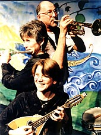

|
|
| Home |
| The company |
| Newsletter |
| What the press say |
| What you say |
What the Press SayA selection fo press comments about Mike's productions"Mike Maran, you've invented a genre into which you can cram your whole, huge heart." The Scotsman "joyous ... an extraordinarily memorable, unmissable evening of theatre-magic" "Maran has demonstrated an extraordinary ability to tell and enact stories that keep his hearers spellbound." Somerset County Gazette "A true literary delicacy set to David Milligan's vividly arranged score." The Stage Online "One minute the audience were laughing, the next they were cut down and brought to the point of tears." Taunton Evening News "Engrossing, touching and beautifully played." The Sunday Times "A masterpiece of storytelling." Eastern Daily Press "I have never been so moved by a theatrical performance of this kind" The Wayfarer "Mike Maran's telling of the story is very powerful and affecting. Maran moves from character to character with effortless ease and presents a moving tribute to a great and passionate composer." Ron Fergusson. Aberdeen Press and Journal "Maran is a mesmeric storyteller using repetition and circularity to deeply move his listeners." Mary Redman. The Stage "a magic piece of theatre, the near capacity audience spell bound at the feet of a master storyteller." Chelmsford Weekly News |
|  |